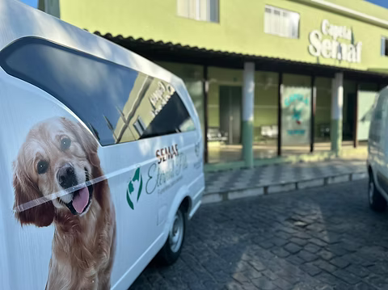
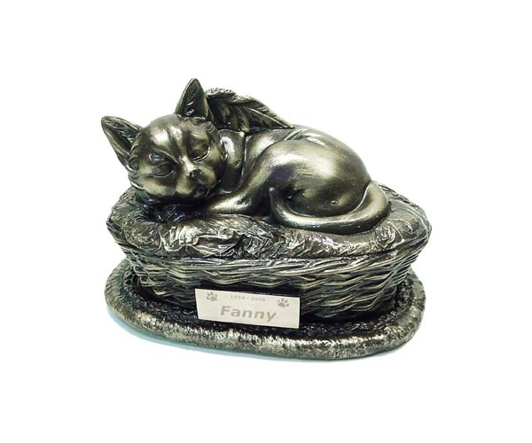
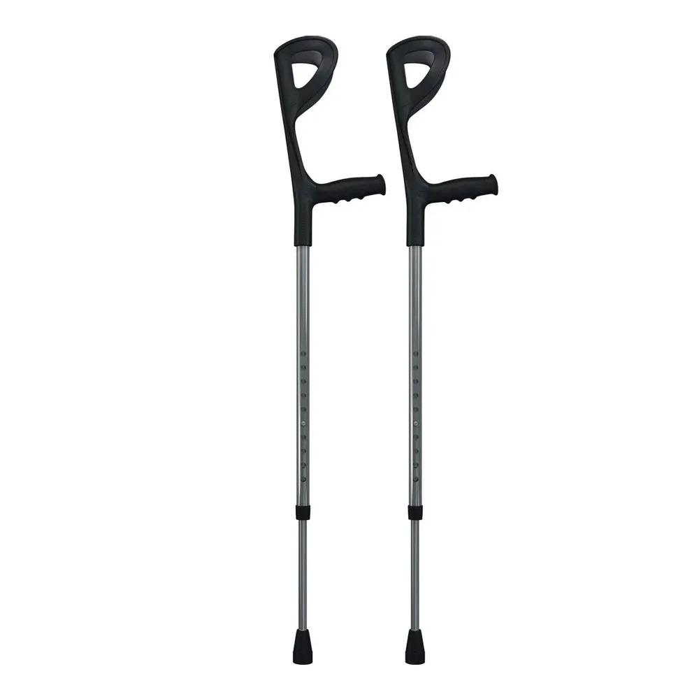
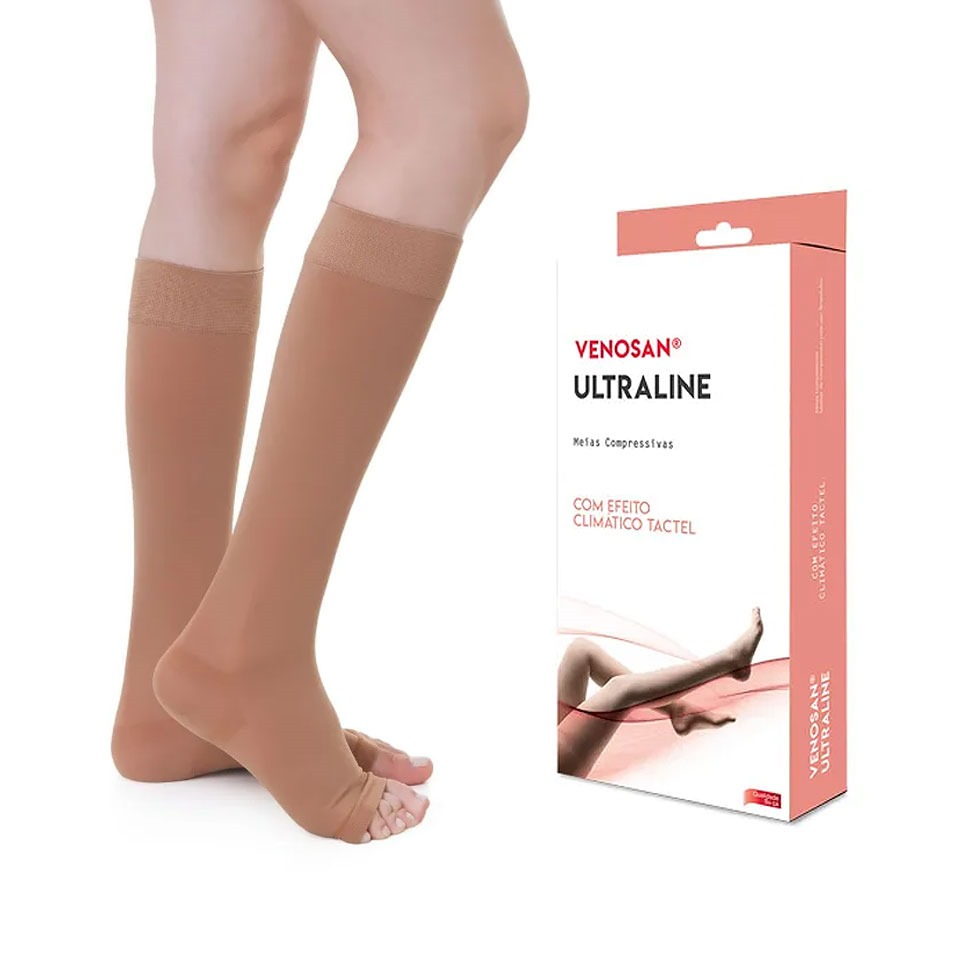
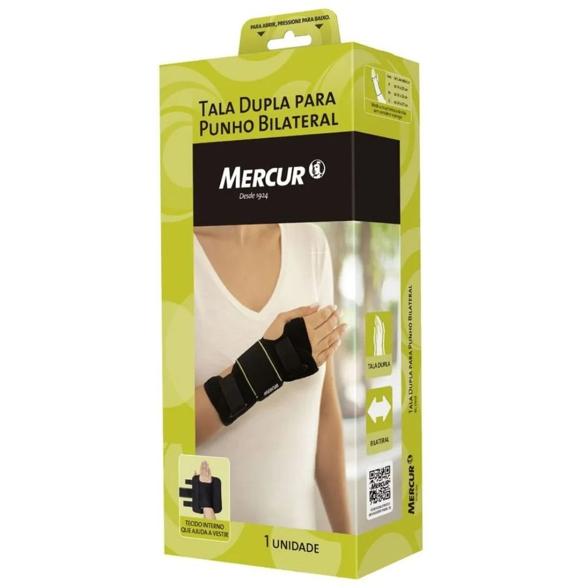
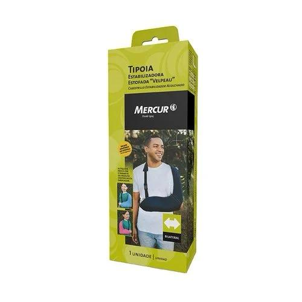
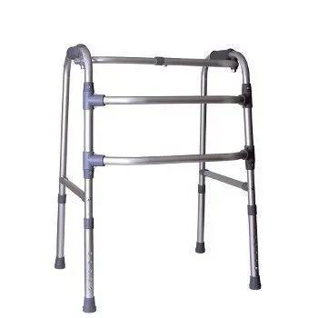
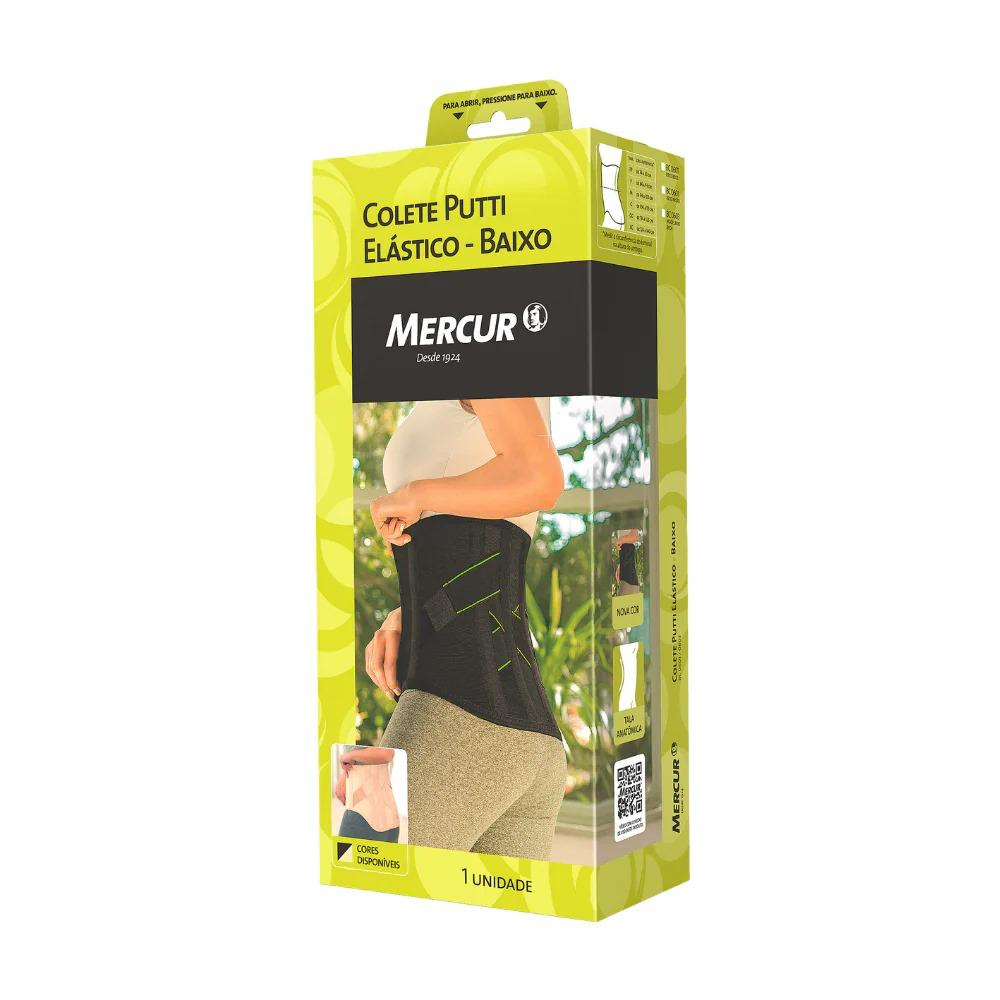

A historia da SEMAF
Com mais de duas décadas de dedicação à comunidade fidelense, a SEMAF - Serviços Funerários e Assistência Familiar é referência em assistência familiar e serviços funerários em São Fidélis e região. Fundada com o compromisso de oferecer amparo e respeito às famílias nos momentos mais delicados, a SEMAF se consolidou como uma empresa séria, humana e inovadora.
Ao longo dos seus 24 anos de atuação, a SEMAF ampliou sua estrutura e serviços, sempre com foco na qualidade e na dignidade. Em 2023, a empresa lançou o plano Eternal Pets, um serviço especializado de cremação de animais de estimação, reafirmando seu compromisso com o cuidado e a preservação ambiental.
No mesmo ano, a SEMAF deu mais um passo pioneiro ao conquistar a autorização do Instituto Estadual do Ambiente (Inea) para a instalação do primeiro crematório humano da região Norte e Noroeste Fluminense. Essa conquista coloca São Fidélis como referência em modernidade e respeito às escolhas das famílias no momento da despedida.
Na SEMAF, acolhimento, ética e inovação caminham juntos para oferecer um atendimento humanizado, completo e de confiança. Estamos aqui para cuidar de você e da sua família — sempre.
Os Nossos Serviços:

Serviços Funerários
Oferecemos serviços funerários completos com respeito e dignidade
Saiba mais...
Na SEMAF, oferecemos serviços funerários completos que incluem velatório 24h, preparação do corpo, fornecimento de urnas, flores, transporte fúnebre e documentação necessária. Nossa equipe experiente e atenciosa garante que cada pessoa seja homenageada com respeito, dignidade e todo o cuidado que merece. Estamos ao lado das famílias em todos os momentos, oferecendo suporte e acolhimento.

Crematório de pet
Serviço especializado de cremação para animais de estimação
Saiba mais...
O plano Eternal Pets da SEMAF oferece um serviço especializado de cremação individual para animais de estimação, realizado com todo carinho e respeito. Entregamos as cinzas em urna personalizada e certificado de cremação. Este serviço reafirma nosso compromisso com o cuidado, a preservação ambiental e o respeito pelo vínculo entre famílias e seus pets, oferecendo uma despedida digna e amorosa.

Tanatopraxia
Técnica especializada de preparação e conservação do corpo
Saiba mais...
A tanatopraxia é a técnica profissional de higienizar, conservar e preparar esteticamente o corpo do falecido. Nossos especialistas realizam este serviço com máximo respeito, proporcionando uma apresentação digna e serena, permitindo que a pessoa seja velada com dignidade e oferecendo às famílias uma imagem mais próxima e pacífica de seu ente querido. Este cuidado especial traz conforto nos momentos de despedida.
Alguns dos equipamentos que nos disponibilizamos para aluguel e vendas:
Cadeira de rodas
Empréstimo gratuito de cadeiras de rodas para a comunidade
Saiba mais...
A SEMAF disponibiliza cadeiras de rodas para empréstimo gratuito à comunidade de São Fidélis. Este serviço social visa auxiliar pessoas com mobilidade reduzida, seja temporária ou permanente, garantindo acesso a equipamentos de qualidade sem custo. Basta comparecer à nossa sede com documento de identificação para realizar o cadastro.

Muletas
Muletas ortopédicas disponíveis para empréstimo
Saiba mais...
Oferecemos muletas ortopédicas de diversos tamanhos para empréstimo gratuito à comunidade. Ideais para recuperação de cirurgias, tratamento de fraturas ou lesões temporárias. Nosso estoque é higienizado e mantido em perfeito estado de conservação para garantir segurança e conforto aos usuários.

Meias de Compressão
Meias de compressão para tratamento vascular
Saiba mais...
Dispomos de meias de compressão elástica de diversos tamanhos, indicadas para tratamento de problemas venosos, recuperação pós-cirúrgica e prevenção de trombose. Disponíveis para empréstimo mediante orientação médica.

Talas Ortopédicas
Talas para imobilização e recuperação
Saiba mais...
Talas ortopédicas para imobilização de membros, auxiliando na recuperação de fraturas, entorses e lesões. Disponíveis em diversos tamanhos para braços, pulsos, pernas e tornozelos. Serviço gratuito para a comunidade.

Tipoias
Tipoias para sustentação de membros superiores
Saiba mais...
Tipoias confortáveis e ajustáveis para sustentação e imobilização de braços e ombros durante recuperação de lesões ou cirurgias. Material de qualidade que proporciona conforto e segurança ao paciente.

Andadores
Andadores para auxiliar na mobilidade e equilíbrio
Saiba mais...
Andadores ortopédicos que proporcionam apoio e segurança para pessoas com dificuldades de locomomoção. Ideais para idosos, pacientes em recuperação ou pessoas com mobilidade reduzida. Disponíveis em diferentes modelos, incluindo com e sem rodas.

Coletes Ortopédicos
Coletes para suporte e correção postural
Saiba mais...
Coletes ortopédicos para suporte da coluna vertebral, indicados para tratamento de lesões, recuperação pós-operatória ou correção postural. Disponíveis em vários tamanhos mediante apresentação de prescrição médica. Empréstimo gratuito.
Contatos
Telefone: (22) 99999-9999
Email: contato@semaf.com